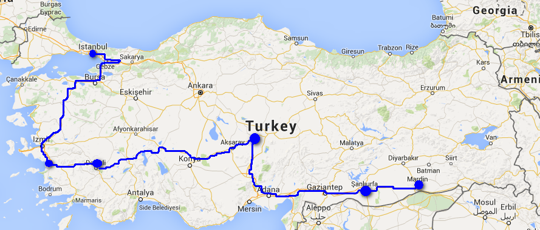

Mardin

離開 Urfa 了。今天的車票寫著九時，但要八時半到達，趕頭趕命，今次去 octogar 的巴士要用 Urfa card，前天由 octogar 回市中心時也買了，要 4 TL 一張，用了一程車費，今次再用，司機就沒收了我的 card 然後扭爛了。
但去到，未有車，賣票的人就是叫我去某個月台等待，結果十時才有車來，那昨晚幹什麼要說九時，玩嘢咩？-_-
Mardin 是在山上，當巴士經過 Mardin Airport 的平原，就開始上山，我留意周圍，去到一個地方，車停下來，一些人下之後，車繼續行，我才看到一個方向牌指著博物館，由這裏行上山應該就是了！但巴士已經駛得越來越遠了，看來個 octogar 真的好遠，旅遊書的 octogar 位置已經是舊的。
到站後，怎樣也問不了如何搭小巴上山，已經十二時多，唯有死去搭 taxi，20 TL。去到上面舊城區，路好窄，後來才知道其實是單程路，但有些車卻夾硬掉頭，弄到塞車。
估不到，Mardin 是如此熱的，我以為在山上，是會比 Urfa 涼快，怎料差不多，甚至覺得還熱。Urfa 和 Mardin 是此行最熱的地方。中午至下午四時是最熱的時候，我卻在這段時間忙這忙那，揹著大背囊，找住宿，心目中要住的 guesthouse，一間關了門，兩間也關了門，發生什麼事？
或許這年變化很大，主要街道兩旁是賣金器化妝品等，這裏算旺，不過是本地遊客來，他們也要住的吧，或者是附近城市來的？好累好熱，而且找住宿都差不多行完這舊城的兩條街，心想回 octogar 買夜車票放下行李。行到東面落一點山的街道，見到一間本地 hotel，再落，有人問我去哪裏，我說 octogar，他說很遠的呀，在這裏等車吧，然後我就懂得如何搭小巴了。
1.25 TL，落到去 octogar，問去 VAN 的巴士，沒有夜車，要買明早九時的車。我還以為長途車必定有夜車的，由這裏開始，我才發覺不是，甚至之後的幾程長途車，都是日間才開的。
唯有照買，然後在這裏得到很多人的幫助，知道這裏有好多小巴經過，由來回新城到舊城，有些會經過 octogar。今次上了一部小巴，是先到新城，然後才到舊城的，幫助我的人說會有點耐的，因為會兜完整個新城才上舊城區，而且塞車。
其實也不錯，還可以看看新城區那邊的樣子，好累了，遊車河反而還好。小巴兜完新城區，也不是很久，因為其實也不是很大地方，來到今早我錯過的下車點，繼續上山，原來這段路也不短的，所以搭小巴較好。
然後，突然發生了一件事，就是車中一個人，還年青的男子，突然他抱著的東西全跌下來，然後看見他像僵了，很辛苦，小巴即刻停了，有些人把他躺平，我見他流晒汗。不久，救護車來到。下車後，我沿著主要街道慢慢行，行到之前經過的那間本地酒店。我仍然是想著剛才發生的事，人生無常，或者有一天，我在某地，就這樣就沒有了。
進入這間叫 Aport Otel 的酒店，好多人在大堂，像全是當地人，接待處的人全都忙著，但仍安排到一間房給我，50 TL 一晚，這個價算係咁，剛才我經過主要街道，入過兩間酒店，一間 90 TL 一間 120 TL，雖然這兩間的房的質素都好好。
因為他們要忙著接待和整理房間，要我夜晚七時才回來，我把大行李放下。出去用這不夠三小時來逛 Mardin。首先去東面那個博物館，趕在五時關門前，打了個白鴿轉，博物館呢家嘢，耐有耐睇，快有快睇。
然後已經不能去那些限時限刻的什麼館，反而看看這條街，發覺 Mardin 中差不多所有的店，都是一樣的門面，啡色木，金色店名，好似好 high 咁。這裏也有 Bazar，還有騾在橫街窄巷行。
未日落前上去看 Sultan Isa 清真寺，好舒服。下去找間地道店吃頹飯，即又是那種煮好了不知多久的食物。有時我會怪自己為什麼不用盡每一個機會去吃餐好試新嘢。
在山上看日落，山上向南看，是好美麗的平原。
一天黑 Mardin 就靜過鬼，回到酒店，原來他們煮了晚餐叫我入去一起吃，可惜我飽到上心口。在大堂，當地人細路和我傾計，影相，一些大人女人不肯影，另一些人就叫我影她們，好搞笑。嘈到拆天，酒店的人忍不住叫啲細路唔好咁嘈。
回到房，原來隔籬幾間房都是當地遊客，他們很多人一間房，開著房門，因為是 shared toilet，我每次出入房都見到他們，他們好好笑容。
Mardin Octogar
Sultan Isa